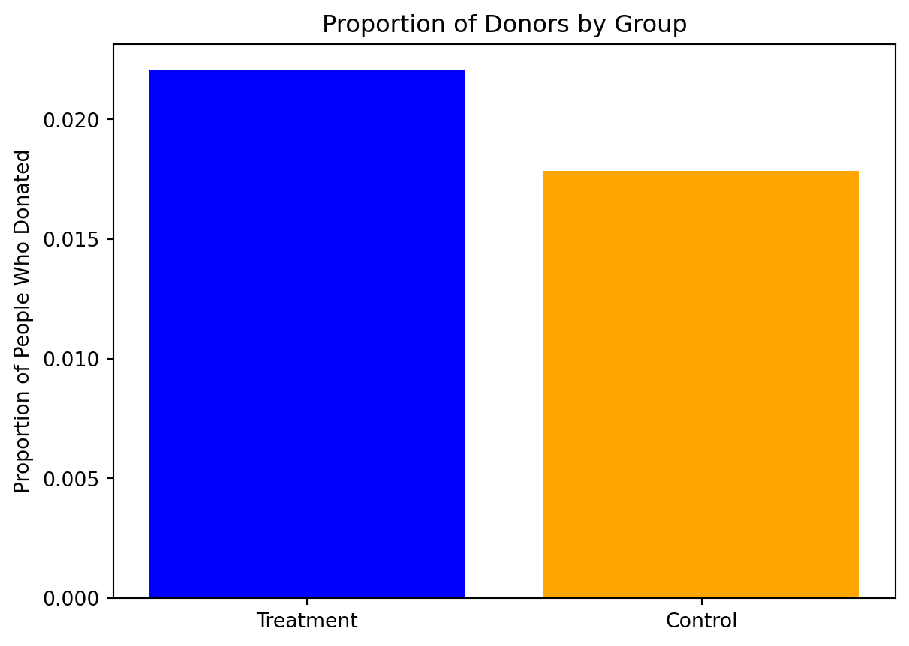
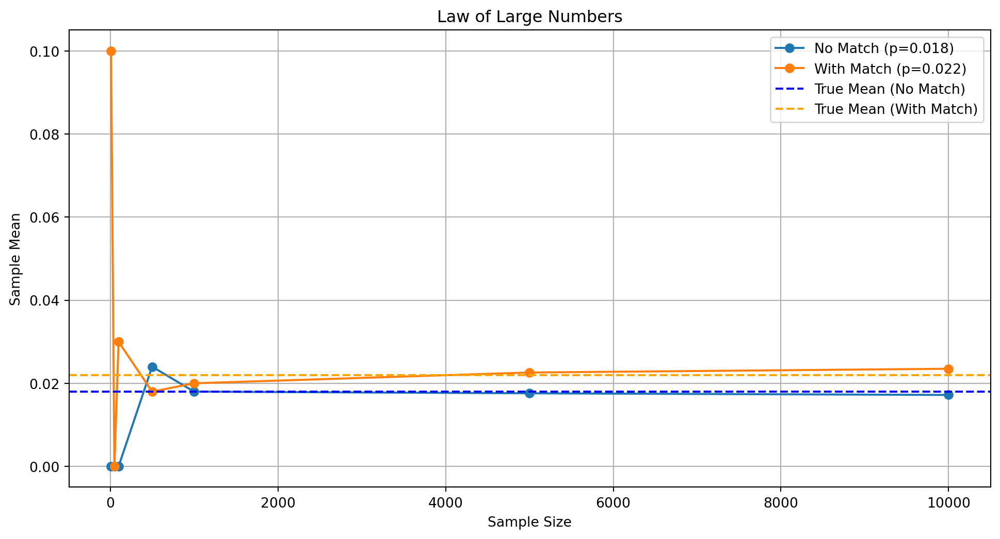
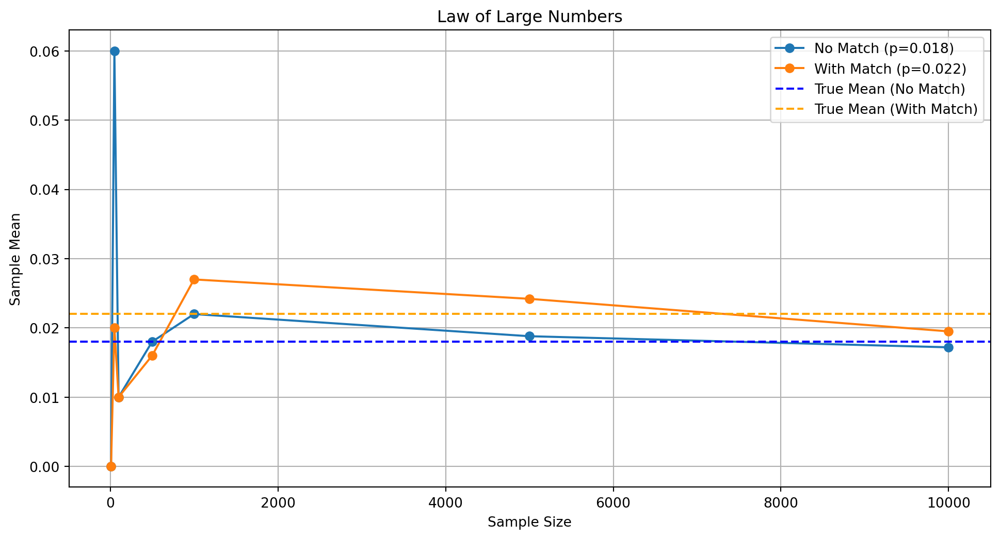
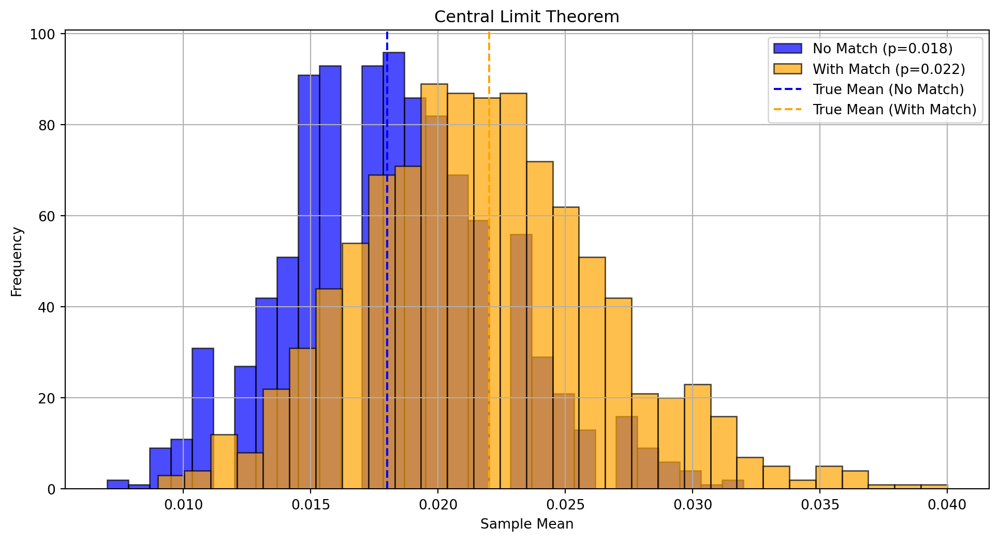
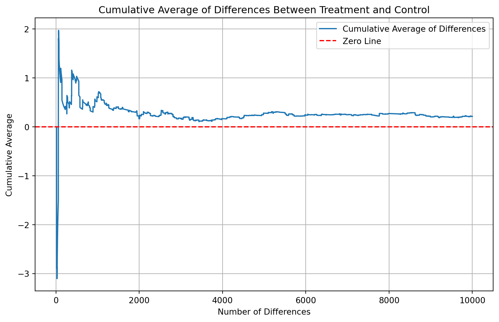
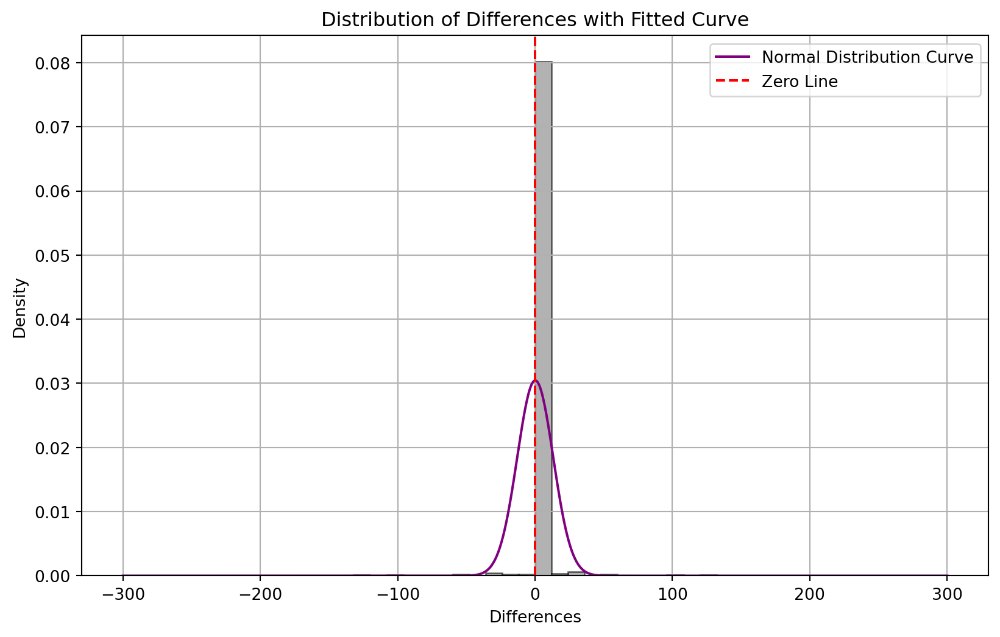

import sys
print(sys.version)3.11.9 | packaged by conda-forge | (main, Apr 19 2024, 18:25:01) [GCC 12.3.0]Your Name
April 23, 2025
Dean Karlan at Yale and John List at the University of Chicago conducted a field experiment to test the effectiveness of different fundraising letters. They sent out 50,000 fundraising letters to potential donors, randomly assigning each letter to one of three treatments: a standard letter, a matching grant letter, or a challenge grant letter. They published the results of this experiment in the American Economic Review in 2007. The article and supporting data are available from the AEA website and from Innovations for Poverty Action as part of Harvard’s Dataverse.
to do: expand on the description of the experiment.
This project seeks to replicate their results.
todo: Read the data into R/Python and describe the data
3.11.9 | packaged by conda-forge | (main, Apr 19 2024, 18:25:01) [GCC 12.3.0]import pandas as pd
# Load the Stata file
file_path = "/home/jovyan/Desktop/marketingwebsite/karlan_list_2007.dta"
df = pd.read_stata(file_path)
# Display basic information
print("Dataset Info:")
print(df.info())Dataset Info:
<class 'pandas.core.frame.DataFrame'>
RangeIndex: 50083 entries, 0 to 50082
Data columns (total 51 columns):
# Column Non-Null Count Dtype
--- ------ -------------- -----
0 treatment 50083 non-null int8
1 control 50083 non-null int8
2 ratio 50083 non-null category
3 ratio2 50083 non-null int8
4 ratio3 50083 non-null int8
5 size 50083 non-null category
6 size25 50083 non-null int8
7 size50 50083 non-null int8
8 size100 50083 non-null int8
9 sizeno 50083 non-null int8
10 ask 50083 non-null category
11 askd1 50083 non-null int8
12 askd2 50083 non-null int8
13 askd3 50083 non-null int8
14 ask1 50083 non-null int16
15 ask2 50083 non-null int16
16 ask3 50083 non-null int16
17 amount 50083 non-null float32
18 gave 50083 non-null int8
19 amountchange 50083 non-null float32
20 hpa 50083 non-null float32
21 ltmedmra 50083 non-null int8
22 freq 50083 non-null int16
23 years 50082 non-null float64
24 year5 50083 non-null int8
25 mrm2 50082 non-null float64
26 dormant 50083 non-null int8
27 female 48972 non-null float64
28 couple 48935 non-null float64
29 state50one 50083 non-null int8
30 nonlit 49631 non-null float64
31 cases 49631 non-null float64
32 statecnt 50083 non-null float32
33 stateresponse 50083 non-null float32
34 stateresponset 50083 non-null float32
35 stateresponsec 50080 non-null float32
36 stateresponsetminc 50080 non-null float32
37 perbush 50048 non-null float32
38 close25 50048 non-null float64
39 red0 50048 non-null float64
40 blue0 50048 non-null float64
41 redcty 49978 non-null float64
42 bluecty 49978 non-null float64
43 pwhite 48217 non-null float32
44 pblack 48047 non-null float32
45 page18_39 48217 non-null float32
46 ave_hh_sz 48221 non-null float32
47 median_hhincome 48209 non-null float64
48 powner 48214 non-null float32
49 psch_atlstba 48215 non-null float32
50 pop_propurban 48217 non-null float32
dtypes: category(3), float32(16), float64(12), int16(4), int8(16)
memory usage: 8.9 MB
None
Summary statistics:
treatment control ratio ratio2 ratio3 \
count 50083.000000 50083.000000 50083 50083.000000 50083.000000
unique NaN NaN 4 NaN NaN
top NaN NaN Control NaN NaN
freq NaN NaN 16687 NaN NaN
mean 0.666813 0.333187 NaN 0.222311 0.222211
std 0.471357 0.471357 NaN 0.415803 0.415736
min 0.000000 0.000000 NaN 0.000000 0.000000
25% 0.000000 0.000000 NaN 0.000000 0.000000
50% 1.000000 0.000000 NaN 0.000000 0.000000
75% 1.000000 1.000000 NaN 0.000000 0.000000
max 1.000000 1.000000 NaN 1.000000 1.000000
size size25 size50 size100 sizeno ... \
count 50083 50083.000000 50083.000000 50083.000000 50083.000000 ...
unique 5 NaN NaN NaN NaN ...
top Control NaN NaN NaN NaN ...
freq 16687 NaN NaN NaN NaN ...
mean NaN 0.166723 0.166623 0.166723 0.166743 ...
std NaN 0.372732 0.372643 0.372732 0.372750 ...
min NaN 0.000000 0.000000 0.000000 0.000000 ...
25% NaN 0.000000 0.000000 0.000000 0.000000 ...
50% NaN 0.000000 0.000000 0.000000 0.000000 ...
75% NaN 0.000000 0.000000 0.000000 0.000000 ...
max NaN 1.000000 1.000000 1.000000 1.000000 ...
redcty bluecty pwhite pblack page18_39 \
count 49978.000000 49978.000000 48217.000000 48047.000000 48217.000000
unique NaN NaN NaN NaN NaN
top NaN NaN NaN NaN NaN
freq NaN NaN NaN NaN NaN
mean 0.510245 0.488715 0.819599 0.086710 0.321694
std 0.499900 0.499878 0.168560 0.135868 0.103039
min 0.000000 0.000000 0.009418 0.000000 0.000000
25% 0.000000 0.000000 0.755845 0.014729 0.258311
50% 1.000000 0.000000 0.872797 0.036554 0.305534
75% 1.000000 1.000000 0.938827 0.090882 0.369132
max 1.000000 1.000000 1.000000 0.989622 0.997544
ave_hh_sz median_hhincome powner psch_atlstba \
count 48221.000000 48209.000000 48214.000000 48215.000000
unique NaN NaN NaN NaN
top NaN NaN NaN NaN
freq NaN NaN NaN NaN
mean 2.429012 54815.700533 0.669418 0.391661
std 0.378105 22027.316665 0.193405 0.186599
min 0.000000 5000.000000 0.000000 0.000000
25% 2.210000 39181.000000 0.560222 0.235647
50% 2.440000 50673.000000 0.712296 0.373744
75% 2.660000 66005.000000 0.816798 0.530036
max 5.270000 200001.000000 1.000000 1.000000
pop_propurban
count 48217.000000
unique NaN
top NaN
freq NaN
mean 0.871968
std 0.258633
min 0.000000
25% 0.884929
50% 1.000000
75% 1.000000
max 1.000000
[11 rows x 51 columns]Some observations from the summary statistics: - The treatment variable has a mean of 0.666813, indicating about two-thirds of the sample received a treatment letter.
The control variable has a mean of 0.333187, indicating one-third of the sample received the standard letter with no match.
The ratio2 (2:1 match) and ratio3 (3:1 match) indicators each have a mean of approximately 0.222, meaning about 22% of the sample received these specific matching offers.
The size25, size50, size100, and sizeno match threshold treatments each have means around 0.167, showing equal distribution across these four match threshold categories.
| Variable | Description |
|---|---|
treatment |
Treatment |
control |
Control |
ratio |
Match ratio |
ratio2 |
2:1 match ratio |
ratio3 |
3:1 match ratio |
size |
Match threshold |
size25 |
$25,000 match threshold |
size50 |
$50,000 match threshold |
size100 |
$100,000 match threshold |
sizeno |
Unstated match threshold |
ask |
Suggested donation amount |
askd1 |
Suggested donation was highest previous contribution |
askd2 |
Suggested donation was 1.25 x highest previous contribution |
askd3 |
Suggested donation was 1.50 x highest previous contribution |
ask1 |
Highest previous contribution (for suggestion) |
ask2 |
1.25 x highest previous contribution (for suggestion) |
ask3 |
1.50 x highest previous contribution (for suggestion) |
amount |
Dollars given |
gave |
Gave anything |
amountchange |
Change in amount given |
hpa |
Highest previous contribution |
ltmedmra |
Small prior donor: last gift was less than median $35 |
freq |
Number of prior donations |
years |
Number of years since initial donation |
year5 |
At least 5 years since initial donation |
mrm2 |
Number of months since last donation |
dormant |
Already donated in 2005 |
female |
Female |
couple |
Couple |
state50one |
State tag: 1 for one observation of each of 50 states; 0 otherwise |
nonlit |
Nonlitigation |
cases |
Court cases from state in 2004-5 in which organization was involved |
statecnt |
Percent of sample from state |
stateresponse |
Proportion of sample from the state who gave |
stateresponset |
Proportion of treated sample from the state who gave |
stateresponsec |
Proportion of control sample from the state who gave |
stateresponsetminc |
stateresponset - stateresponsec |
perbush |
State vote share for Bush |
close25 |
State vote share for Bush between 47.5% and 52.5% |
red0 |
Red state |
blue0 |
Blue state |
redcty |
Red county |
bluecty |
Blue county |
pwhite |
Proportion white within zip code |
pblack |
Proportion black within zip code |
page18_39 |
Proportion age 18-39 within zip code |
ave_hh_sz |
Average household size within zip code |
median_hhincome |
Median household income within zip code |
powner |
Proportion house owner within zip code |
psch_atlstba |
Proportion who finished college within zip code |
pop_propurban |
Proportion of population urban within zip code |
As an ad hoc test of the randomization mechanism, I provide a series of tests that compare aspects of the treatment and control groups to assess whether they are statistically significantly different from one another.
todo: test a few variables other than the key outcome variables (for example, test months since last donation) to see if the treatment and control groups are statistically significantly different at the 95% confidence level. Do each as a t-test and separately as a linear regression, and confirm you get the exact same results from both methods. When doing a t-test, use the formula in the class slides. When doing the linear regression, regress for example mrm2 on treatment and look at the estimated coefficient on the treatment variable. It might be helpful to compare parts of your analysis to Table 1 in the paper. Be sure to comment on your results (hint: why is Table 1 included in the paper).
First, I analyze whether matched donations lead to an increased response rate of making a donation.
import matplotlib.pyplot as plt
# Calculate the proportion of people who donated in each group
treatment_proportion = df[df['treatment'] == 1]['gave'].mean()
control_proportion = df[df['control'] == 1]['gave'].mean()
# Create the barplot
plt.bar(['Treatment', 'Control'], [treatment_proportion, control_proportion], color=['blue', 'orange'])
plt.ylabel('Proportion of People Who Donated')
plt.title('Proportion of Donors by Group')
# Display the proportions
print(f"Proportion of people who donated in the Treatment group: {treatment_proportion:.2%}")
print(f"Proportion of people who donated in the Control group: {control_proportion:.2%}")
plt.show()Proportion of people who donated in the Treatment group: 2.20%
Proportion of people who donated in the Control group: 1.79%
from scipy.stats import ttest_ind
%pip install statsmodels
import statsmodels.formula.api as smf
import statsmodels.api as smRequirement already satisfied: statsmodels in /home/jovyan/.rsm-msba/lib/python3.11/site-packages (0.14.4)
Requirement already satisfied: numpy<3,>=1.22.3 in /opt/conda/lib/python3.11/site-packages (from statsmodels) (1.26.4)
Requirement already satisfied: scipy!=1.9.2,>=1.8 in /opt/conda/lib/python3.11/site-packages (from statsmodels) (1.12.0)
Requirement already satisfied: pandas!=2.1.0,>=1.4 in /home/jovyan/.rsm-msba/lib/python3.11/site-packages (from statsmodels) (2.2.3)
Requirement already satisfied: patsy>=0.5.6 in /opt/conda/lib/python3.11/site-packages (from statsmodels) (0.5.6)
Requirement already satisfied: packaging>=21.3 in /opt/conda/lib/python3.11/site-packages (from statsmodels) (24.1)
Requirement already satisfied: python-dateutil>=2.8.2 in /opt/conda/lib/python3.11/site-packages (from pandas!=2.1.0,>=1.4->statsmodels) (2.9.0)
Requirement already satisfied: pytz>=2020.1 in /opt/conda/lib/python3.11/site-packages (from pandas!=2.1.0,>=1.4->statsmodels) (2024.1)
Requirement already satisfied: tzdata>=2022.7 in /opt/conda/lib/python3.11/site-packages (from pandas!=2.1.0,>=1.4->statsmodels) (2024.1)
Requirement already satisfied: six in /opt/conda/lib/python3.11/site-packages (from patsy>=0.5.6->statsmodels) (1.16.0)
Note: you may need to restart the kernel to use updated packages.import statsmodels.api as sm
# Add an intercept column to the DataFrame
df['intercept'] = 1
# Perform a bivariate linear regression
bivariate_model = sm.OLS(df['gave'], df[['intercept', 'treatment']])
bivariate_results = bivariate_model.fit()
print("\nBivariate Linear Regression results:")
print(bivariate_results.summary())
# Extract the p-value for the treatment variable
bivariate_p_value = bivariate_results.pvalues['treatment']
print(f"\nP-value for treatment in bivariate regression: {bivariate_p_value:.4f}")
Bivariate Linear Regression results:
OLS Regression Results
==============================================================================
Dep. Variable: gave R-squared: 0.000
Model: OLS Adj. R-squared: 0.000
Method: Least Squares F-statistic: 9.618
Date: Wed, 23 Apr 2025 Prob (F-statistic): 0.00193
Time: 12:09:09 Log-Likelihood: 26630.
No. Observations: 50083 AIC: -5.326e+04
Df Residuals: 50081 BIC: -5.324e+04
Df Model: 1
Covariance Type: nonrobust
==============================================================================
coef std err t P>|t| [0.025 0.975]
------------------------------------------------------------------------------
intercept 0.0179 0.001 16.225 0.000 0.016 0.020
treatment 0.0042 0.001 3.101 0.002 0.002 0.007
==============================================================================
Omnibus: 59814.280 Durbin-Watson: 2.005
Prob(Omnibus): 0.000 Jarque-Bera (JB): 4317152.727
Skew: 6.740 Prob(JB): 0.00
Kurtosis: 46.440 Cond. No. 3.23
==============================================================================
Notes:
[1] Standard Errors assume that the covariance matrix of the errors is correctly specified.
P-value for treatment in bivariate regression: 0.0019# Perform a probit regression
probit_model = smf.probit('gave ~ treatment', data=df)
probit_results = probit_model.fit()
# Display the summary of the probit regression
print("\nProbit Regression results:")
print(probit_results.summary())Optimization terminated successfully.
Current function value: 0.100443
Iterations 7
Probit Regression results:
Probit Regression Results
==============================================================================
Dep. Variable: gave No. Observations: 50083
Model: Probit Df Residuals: 50081
Method: MLE Df Model: 1
Date: Wed, 23 Apr 2025 Pseudo R-squ.: 0.0009783
Time: 12:09:10 Log-Likelihood: -5030.5
converged: True LL-Null: -5035.4
Covariance Type: nonrobust LLR p-value: 0.001696
==============================================================================
coef std err z P>|z| [0.025 0.975]
------------------------------------------------------------------------------
Intercept -2.1001 0.023 -90.073 0.000 -2.146 -2.054
treatment 0.0868 0.028 3.113 0.002 0.032 0.141
==============================================================================Notes: [1] Standard Errors assume that the covariance matrix of the errors is correctly specified.
P-value for treatment in bivariate regression: 0.0019
Next, I assess the effectiveness of different sizes of matched donations on the response rate.
# Extract unique match ratios
match_ratios = df['ratio'].unique()
# Perform pairwise t-tests between match ratios
for i in range(len(match_ratios)):
for j in range(i + 1, len(match_ratios)):
ratio1 = match_ratios[i]
ratio2 = match_ratios[j]
# Filter data for the two match ratios
group1 = df[df['ratio'] == ratio1]['gave'].dropna()
group2 = df[df['ratio'] == ratio2]['gave'].dropna()
# Perform t-test
t_stat, p_value = ttest_ind(group1, group2, equal_var=False)
# Print results
print(f"T-test between match ratios {ratio1} and {ratio2}:")
print(f"T-statistic: {t_stat:.4f}, P-value: {p_value:.4f}\n")T-test between match ratios Control and 1:
T-statistic: -1.7046, P-value: 0.0883
T-test between match ratios Control and 2:
T-statistic: -2.7396, P-value: 0.0062
T-test between match ratios Control and 3:
T-statistic: -2.7926, P-value: 0.0052
T-test between match ratios 1 and 2:
T-statistic: -0.9650, P-value: 0.3345
T-test between match ratios 1 and 3:
T-statistic: -1.0150, P-value: 0.3101
T-test between match ratios 2 and 3:
T-statistic: -0.0501, P-value: 0.9600
# Create the variable `ratio1` from the `ratio` column
df['ratio1'] = (df['ratio'] == 1).astype(int)
# Perform the regression
regression_model = sm.OLS(df['gave'], df[['intercept', 'ratio1', 'ratio2', 'ratio3']])
regression_results = regression_model.fit()
# Display the regression results
print("\nRegression results:")
print(regression_results.summary())
Regression results:
OLS Regression Results
==============================================================================
Dep. Variable: gave R-squared: 0.000
Model: OLS Adj. R-squared: 0.000
Method: Least Squares F-statistic: 3.665
Date: Wed, 23 Apr 2025 Prob (F-statistic): 0.0118
Time: 12:09:10 Log-Likelihood: 26630.
No. Observations: 50083 AIC: -5.325e+04
Df Residuals: 50079 BIC: -5.322e+04
Df Model: 3
Covariance Type: nonrobust
==============================================================================
coef std err t P>|t| [0.025 0.975]
------------------------------------------------------------------------------
intercept 0.0179 0.001 16.225 0.000 0.016 0.020
ratio1 0.0029 0.002 1.661 0.097 -0.001 0.006
ratio2 0.0048 0.002 2.744 0.006 0.001 0.008
ratio3 0.0049 0.002 2.802 0.005 0.001 0.008
==============================================================================
Omnibus: 59812.754 Durbin-Watson: 2.005
Prob(Omnibus): 0.000 Jarque-Bera (JB): 4316693.217
Skew: 6.740 Prob(JB): 0.00
Kurtosis: 46.438 Cond. No. 4.26
==============================================================================
Notes:
[1] Standard Errors assume that the covariance matrix of the errors is correctly specified.# Directly from the data
response_rate_1_1 = df[df['ratio'] == 1]['gave'].mean()
response_rate_2_1 = df[df['ratio'] == 2]['gave'].mean()
response_rate_3_1 = df[df['ratio'] == 3]['gave'].mean()
difference_1_1_2_1 = response_rate_1_1 - response_rate_2_1
difference_2_1_3_1 = response_rate_2_1 - response_rate_3_1
print(f"Response rate difference (1:1 - 2:1): {difference_1_1_2_1:.4f}")
print(f"Response rate difference (2:1 - 3:1): {difference_2_1_3_1:.4f}")
# Using fitted coefficients from the regression
coefficients = regression_results.params
difference_1_1_2_1_coeff = coefficients[1] # Coefficient for ratio 2
difference_2_1_3_1_coeff = coefficients[2] - coefficients[1] # Difference between coefficients for ratio 3 and ratio 2
print(f"Response rate difference from coefficients (1:1 - 2:1): {difference_1_1_2_1_coeff:.4f}")
print(f"Response rate difference from coefficients (2:1 - 3:1): {difference_2_1_3_1_coeff:.4f}")Response rate difference (1:1 - 2:1): -0.0019
Response rate difference (2:1 - 3:1): -0.0001
Response rate difference from coefficients (1:1 - 2:1): 0.0029
Response rate difference from coefficients (2:1 - 3:1): 0.0019/tmp/ipykernel_44184/298916022.py:14: FutureWarning:
Series.__getitem__ treating keys as positions is deprecated. In a future version, integer keys will always be treated as labels (consistent with DataFrame behavior). To access a value by position, use `ser.iloc[pos]`
/tmp/ipykernel_44184/298916022.py:15: FutureWarning:
Series.__getitem__ treating keys as positions is deprecated. In a future version, integer keys will always be treated as labels (consistent with DataFrame behavior). To access a value by position, use `ser.iloc[pos]`
Increasing donation match ratios from 1:1 to 2:1 slightly boosts response rates, but moving from 2:1 to 3:1 offers minimal additional impact. Response rates rise from 2.07% (1:1) to 2.26% (2:1) and only slightly to 2.27% (3:1), with diminishing returns evident in both response differences and regression coefficients. This suggests that while a moderate increase in match size can be effective, higher ratios beyond 2:1 may not significantly enhance donor motivation.
In this subsection, I analyze the effect of the size of matched donation on the size of the charitable contribution.
# Perform a bivariate linear regression of donation amount on treatment status
bivariate_amount_model = sm.OLS(df['amount'], df[['intercept', 'treatment']])
bivariate_amount_results = bivariate_amount_model.fit()
# Display the regression results
print("\nBivariate Linear Regression results for donation amount on treatment status:")
print(bivariate_amount_results.summary())
Bivariate Linear Regression results for donation amount on treatment status:
OLS Regression Results
==============================================================================
Dep. Variable: amount R-squared: 0.000
Model: OLS Adj. R-squared: 0.000
Method: Least Squares F-statistic: 3.461
Date: Wed, 23 Apr 2025 Prob (F-statistic): 0.0628
Time: 12:09:10 Log-Likelihood: -1.7946e+05
No. Observations: 50083 AIC: 3.589e+05
Df Residuals: 50081 BIC: 3.589e+05
Df Model: 1
Covariance Type: nonrobust
==============================================================================
coef std err t P>|t| [0.025 0.975]
------------------------------------------------------------------------------
intercept 0.8133 0.067 12.063 0.000 0.681 0.945
treatment 0.1536 0.083 1.861 0.063 -0.008 0.315
==============================================================================
Omnibus: 96861.113 Durbin-Watson: 2.008
Prob(Omnibus): 0.000 Jarque-Bera (JB): 240735713.635
Skew: 15.297 Prob(JB): 0.00
Kurtosis: 341.269 Cond. No. 3.23
==============================================================================
Notes:
[1] Standard Errors assume that the covariance matrix of the errors is correctly specified.Observations:
Effect of Treatment on Donation Amount: The coefficient for the treatment variable is 0.1536, indicating that being in the treatment group (e.g., exposed to a donation match offer) is associated with an increase of approximately $0.15 in the average donation amount. However, this effect is not statistically significant at the conventional 5% level (p = 0.063), suggesting we cannot confidently conclude that treatment has a real impact on donation amount.
Model Fit: The R-squared value is 0.000, indicating that the model explains virtually none of the variation in donation amount. This is common in social science data but implies that other factors (beyond just treatment status) are likely influencing donation amounts.
Statistical Significance: While the p-value for the treatment variable (0.063) is close to 0.05, it slightly exceeds it, meaning the result is only marginally significant. This suggests a possible, but weak, effect of treatment on donation amount that might warrant further investigation with a larger sample or additional controls.
Baseline Donation Amount: The intercept is 0.8133, indicating that individuals in the control group donated around $0.81 on average.
todo: now limit the data to just people who made a donation and repeat the previous analysis. This regression allows you to analyze how much respondents donate conditional on donating some positive amount. Interpret the regression coefficients – what did we learn? Does the treatment coefficient have a causal interpretation?
# Filter the data to include only people who made a donation
donors_df = df[df['gave'] == 1]
# Perform a bivariate linear regression of donation amount on treatment status for donors
bivariate_donors_model = sm.OLS(donors_df['amount'], donors_df[['intercept', 'treatment']])
bivariate_donors_results = bivariate_donors_model.fit()
# Display the regression results
print("\nBivariate Linear Regression results for donation amount on treatment status (donors only):")
print(bivariate_donors_results.summary())
Bivariate Linear Regression results for donation amount on treatment status (donors only):
OLS Regression Results
==============================================================================
Dep. Variable: amount R-squared: 0.000
Model: OLS Adj. R-squared: -0.001
Method: Least Squares F-statistic: 0.3374
Date: Wed, 23 Apr 2025 Prob (F-statistic): 0.561
Time: 12:09:10 Log-Likelihood: -5326.8
No. Observations: 1034 AIC: 1.066e+04
Df Residuals: 1032 BIC: 1.067e+04
Df Model: 1
Covariance Type: nonrobust
==============================================================================
coef std err t P>|t| [0.025 0.975]
------------------------------------------------------------------------------
intercept 45.5403 2.423 18.792 0.000 40.785 50.296
treatment -1.6684 2.872 -0.581 0.561 -7.305 3.968
==============================================================================
Omnibus: 587.258 Durbin-Watson: 2.031
Prob(Omnibus): 0.000 Jarque-Bera (JB): 5623.279
Skew: 2.464 Prob(JB): 0.00
Kurtosis: 13.307 Cond. No. 3.49
==============================================================================
Notes:
[1] Standard Errors assume that the covariance matrix of the errors is correctly specified.INTERPRETATIONS: - Donors in the treatment group gave about $1.67 less on average than those in the control group. However, this difference is not statistically significant (p-value = 0.561), meaning we can’t confidently say it’s a real effect.
There’s no strong evidence that treatment affects the amount donated, conditional on donating.
The treatment coefficient should not be interpreted causally because the sample is restricted to donors only.
Treatment could influence both whether someone donates and how much they give. By only analyzing donors, we’re conditioning on a post-treatment outcome, which can lead to biased estimates (known as collider bias).
import matplotlib.pyplot as plt
# Filter donation amounts for treatment and control groups among donors
treatment_donations = donors_df[donors_df['treatment'] == 1]['amount']
control_donations = donors_df[donors_df['control'] == 1]['amount']
# Calculate the sample averages
treatment_avg = treatment_donations.mean()
control_avg = control_donations.mean()
# Create the histograms
fig, axes = plt.subplots(1, 2, figsize=(12, 6), sharey=True)
# Treatment group histogram
axes[0].hist(treatment_donations, bins=30, color='blue', alpha=0.7, edgecolor='black')
axes[0].axvline(treatment_avg, color='red', linestyle='--', label=f'Avg: {treatment_avg:.2f}')
axes[0].set_title('Treatment Group')
axes[0].set_xlabel('Donation Amount')
axes[0].set_ylabel('Frequency')
axes[0].legend()
# Control group histogram
axes[1].hist(control_donations, bins=30, color='green', alpha=0.7, edgecolor='black')
axes[1].axvline(control_avg, color='red', linestyle='--', label=f'Avg: {control_avg:.2f}')
axes[1].set_title('Control Group')
axes[1].set_xlabel('Donation Amount')
axes[1].legend()
# Display the plots
plt.tight_layout()
plt.show()
As a reminder of how the t-statistic “works,” in this section I use simulation to demonstrate the Law of Large Numbers and the Central Limit Theorem.
Suppose the true distribution of respondents who do not get a charitable donation match is Bernoulli with probability p=0.018 that a donation is made.
Further suppose that the true distribution of respondents who do get a charitable donation match of any size is Bernoulli with probability p=0.022 that a donation is made.
import numpy as np
import matplotlib.pyplot as plt
# Parameters
p_no_match = 0.018 # Probability of donation without match
p_with_match = 0.022 # Probability of donation with match
sample_sizes = [10, 50, 100, 500, 1000, 5000, 10000] # Different sample sizes
num_simulations = 1000 # Number of simulations for CLT
# Law of Large Numbers (LLN)
means_no_match = []
means_with_match = []
for size in sample_sizes:
sample_no_match = np.random.binomial(1, p_no_match, size)
sample_with_match = np.random.binomial(1, p_with_match, size)
means_no_match.append(np.mean(sample_no_match))
means_with_match.append(np.mean(sample_with_match))
# Plot LLN
plt.figure(figsize=(12, 6))
plt.plot(sample_sizes, means_no_match, label="No Match (p=0.018)", marker='o')
plt.plot(sample_sizes, means_with_match, label="With Match (p=0.022)", marker='o')
plt.axhline(y=p_no_match, color='blue', linestyle='--', label="True Mean (No Match)")
plt.axhline(y=p_with_match, color='orange', linestyle='--', label="True Mean (With Match)")
plt.xlabel("Sample Size")
plt.ylabel("Sample Mean")
plt.title("Law of Large Numbers")
plt.legend()
plt.grid()
plt.show()
# Central Limit Theorem (CLT)
sample_means_no_match = []
sample_means_with_match = []
for _ in range(num_simulations):
sample_no_match = np.random.binomial(1, p_no_match, 1000) # Fixed sample size
sample_with_match = np.random.binomial(1, p_with_match, 1000)
sample_means_no_match.append(np.mean(sample_no_match))
sample_means_with_match.append(np.mean(sample_with_match))
# Plot CLT
plt.figure(figsize=(12, 6))
plt.hist(sample_means_no_match, bins=30, alpha=0.7, label="No Match (p=0.018)", color='blue', edgecolor='black')
plt.hist(sample_means_with_match, bins=30, alpha=0.7, label="With Match (p=0.022)", color='orange', edgecolor='black')
plt.axvline(x=p_no_match, color='blue', linestyle='--', label="True Mean (No Match)")
plt.axvline(x=p_with_match, color='orange', linestyle='--', label="True Mean (With Match)")
plt.xlabel("Sample Mean")
plt.ylabel("Frequency")
plt.title("Central Limit Theorem")
plt.legend()
plt.grid()
plt.show()

import numpy as np
# Filter the control group
control_amounts = df[df['control'] == 1]['amount']
# Simulate 100,000 draws from the control distribution
simulated_draws = np.random.choice(control_amounts, size=100000, replace=True)
# Display summary statistics of the simulated draws
print(f"Simulated Draws Summary:")
print(f"Mean: {np.mean(simulated_draws):.4f}")
print(f"Standard Deviation: {np.std(simulated_draws):.4f}")
print(f"Min: {np.min(simulated_draws):.4f}")
print(f"Max: {np.max(simulated_draws):.4f}")Simulated Draws Summary:
Mean: 0.7999
Standard Deviation: 8.0425
Min: 0.0000
Max: 300.0000# Filter the treatment group
treatment_amounts = df[df['treatment'] == 1]['amount']
# Simulate 10,000 draws from the treatment distribution
simulated_treatment_draws = np.random.choice(treatment_amounts, size=10000, replace=True)
# Display summary statistics of the simulated treatment draws
print(f"Simulated Treatment Draws Summary:")
print(f"Mean: {np.mean(simulated_treatment_draws):.4f}")
print(f"Standard Deviation: {np.std(simulated_treatment_draws):.4f}")
print(f"Min: {np.min(simulated_treatment_draws):.4f}")
print(f"Max: {np.max(simulated_treatment_draws):.4f}")Simulated Treatment Draws Summary:
Mean: 0.9725
Standard Deviation: 9.2053
Min: 0.0000
Max: 300.0000# Simulate 100,000 draws from the control distribution
simulated_control_draws = np.random.choice(control_amounts, size=100000, replace=True)
# Simulate 10,000 draws from the treatment distribution
simulated_treatment_draws = np.random.choice(treatment_amounts, size=10000, replace=True)
# Calculate a vector of 10,000 differences
differences = simulated_treatment_draws - simulated_control_draws[:10000]
# Calculate the cumulative average of the differences
cumulative_avg = np.cumsum(differences) / np.arange(1, len(differences) + 1)
# Plot the cumulative average
plt.figure(figsize=(10, 6))
plt.plot(cumulative_avg, label="Cumulative Average of Differences")
plt.axhline(0, color='red', linestyle='--', label="Zero Line")
plt.xlabel("Number of Differences")
plt.ylabel("Cumulative Average")
plt.title("Cumulative Average of Differences Between Treatment and Control")
plt.legend()
plt.grid()
plt.show()
from scipy.stats import norm
# Add a distribution curve to the plot
# Fit a normal distribution to the differences
mean_diff = np.mean(differences)
std_diff = np.std(differences)
# Generate x values for the curve
x = np.linspace(min(differences), max(differences), 1000)
y = norm.pdf(x, mean_diff, std_diff)
# Plot the distribution curve
plt.figure(figsize=(10, 6))
plt.plot(x, y, label="Normal Distribution Curve", color='purple')
plt.hist(differences, bins=50, density=True, alpha=0.6, color='gray', edgecolor='black')
plt.axvline(0, color='red', linestyle='--', label="Zero Line")
plt.xlabel("Differences")
plt.ylabel("Density")
plt.title("Distribution of Differences with Fitted Curve")
plt.legend()
plt.grid()
plt.show()
to do: Make 4 histograms like those on slide 44 from our first class at sample sizes 50, 200, 500, and 1000 and explain these plots to the reader. To do this for a sample size of e.g. 50, take 50 draws from each of the control and treatment distributions, and calculate the average difference between those draws. Then repeat that process 999 more times so that you have 1000 averages. Plot the histogram of those averages. Comment on whether zero is in the “middle” of the distribution or whether it’s in the “tail.”